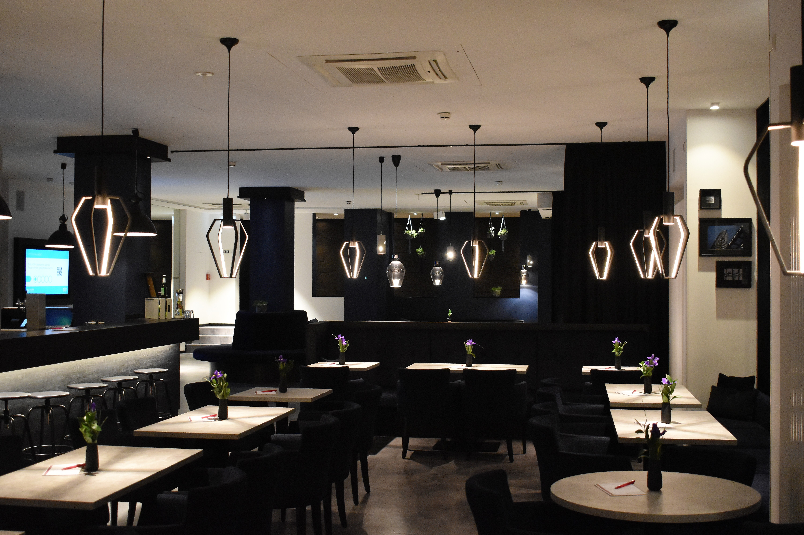
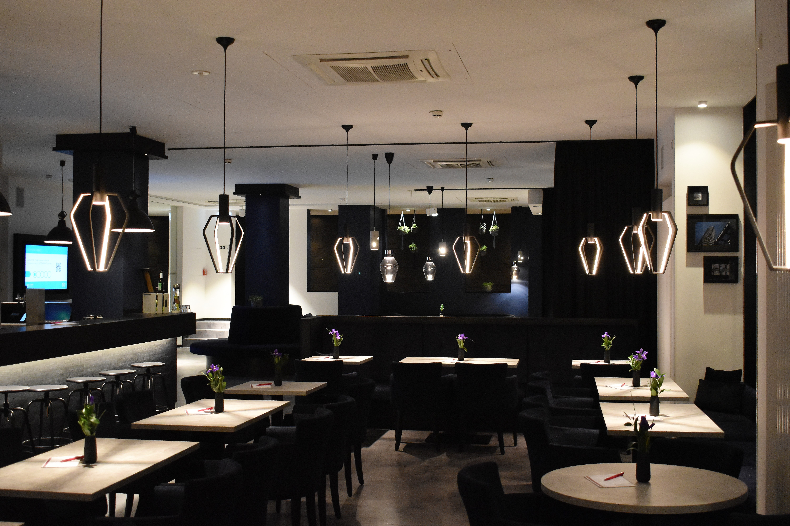

A restaurant is a place where you can eat a meal and pay for it. In restaurants your food is usually searved to you at your table by a waiter or waitress.
It is also a place where people go to enjoy the time and to eat meal. Some restaurants are a chain, meaning that there are restaurants which have the same name and serve the same food.
Beyond the basic purpose of restaurants to provide food and drink, restaurants have, historically, fulfilled a human need for connection and shaped social relations.
The purpose of a restaurant website is to help customers choose you over eateries. if you include the above features, you make it easier for diners to choose you.